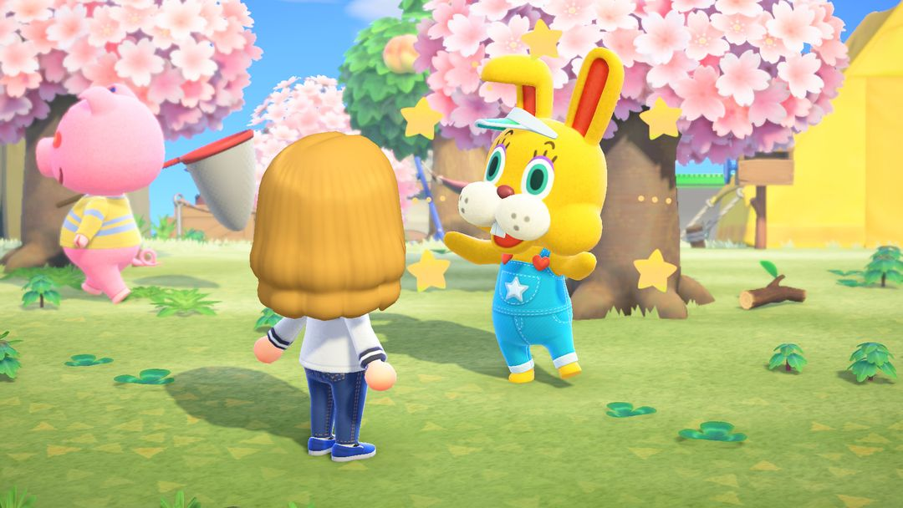
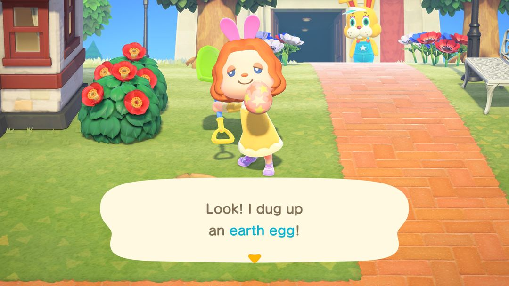
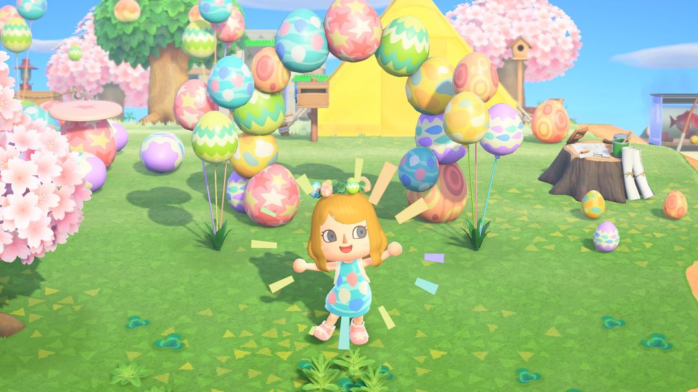

复活节：六种蛋去哪找，DIY手册怎么集齐
复活节前一周开始，一共 8 天，蹦蹦来两次
复活节一共 8 天：前 7 天满岛捡蛋，第 8 天是复活节当天，正好是个星期天。这几天岛上会冒出六种彩蛋，挖地、摇树、射气球、敲石头、钓鱼、砍树，各有各的出处。主持活动的兔子蹦蹦会来两次，第一天来布置任务，最后一天来收成果。
这次要集的DIY手册不少：家具 15 份、衣服 18 份。家具的DIY手册靠射气球、捡瓶中信和岛民送，衣服的DIY手册要靠把每种蛋捡够数。复活节当天去找蹦蹦，六种蛋各交 1 个能换复活节篮子；要是复活节家具都做齐了，他还会再教你两份特别的DIY手册。所以前 7 天每种蛋都得留几个，别全拿去做家具。

蹦蹦（图：任天堂，转自 Nookipedia）
01哪几天
游戏里的复活节就是现实里的复活节，日期每年都会变：春分（3 月 21 日）后第一次满月之后的那个星期天，总落在 3 月 22 日到 4 月 25 日之间。南北半球是同一天，只是南半球那时候已经入秋了。
活动从复活节前一周的星期天开始，前 7 天是捡蛋期，第 8 天就是复活节当天。每年具体是哪几天，可以翻一翻动森圈圈的活动日历。
02蹦蹦什么时候来
主持活动的是兔子蹦蹦，他前后来两次。
第一天，他在岛上到处转悠。碰上他，他会教你「复活节床铺」的DIY手册，托你把复活节家具都做出来。那天没碰上也不要紧，日子过去以后，这份DIY手册会寄到你的信箱。要是你早就学过床铺，他就改教一份你还没有的随机DIY手册。
复活节当天，他守在服务处门口等你去交蛋（第 5 节细说）。岛民们这天也会换上复活节的衣服。
捡蛋期间 Nook商店的货架上还会摆出 5 样复活节商品：复活节甜点、复活节花园旗、复活节盆栽、复活节绿雕、复活节树。
03六种蛋各在哪
六种蛋的出处各不相同，平时的岛上日常顺手做一遍，基本都能碰到：
| 蛋 | 怎么拿 |
| 地面蛋 | 地上星形裂缝，用铲子挖；捡蛋期每天最多 10 个，当天最多 15 个 |
| 叶子蛋 | 摇阔叶树 |
| 飞天蛋 | 用弹弓射复活节图案的气球；只在自己岛上有 |
| 岩石蛋 | 用铲子或斧头敲石头 |
| 鱼儿蛋 | 在河、池塘、海边钓中等大小鱼影时随机钓上来 |
| 森林蛋 | 用斧头砍树，椰子树出得更多 |
除了飞天蛋只在自己岛上有，其余几种在离岛上都更容易出，自己岛上缺哪种，可以上离岛去补。

挖出地面蛋（英文版画面）（图：任天堂，转自 Nookipedia）
04DIY手册怎么集齐
家具类 15 份
家具类一共 15 份：11 件家具，再加上壁纸、地板、地毯和栅栏。它们要从几个地方慢慢攒：射下复活节图案的气球，翻海边冲上来的瓶中信，或者等岛民教你。捡蛋那几天每天都把这几处走一遍，才集得快。
衣服类 18 份
衣服类一共 18 份，六种蛋每种各有蛋壳、衣服、鞋子三件。某一种蛋捡够了数，你就会灵光一闪，想到这种蛋的衣服DIY手册。所以衣服的DIY手册不用找人要，只管把蛋捡够。18 份全学会以后，还能再拿到「蛋派对帽」和「蛋派对连身裙」两份。
常用家具要多少蛋
下面几件比较常做，材料列出来方便你提前算好蛋够不够：
| 东西 | 材料 |
| 复活节床铺 | 地面、岩石、叶子、森林、飞天蛋各 1 |
| 复活节拱门 | 五种蛋各 2（不含鱼儿蛋） |
| 复活节桌 | 地面蛋 4 |
| 复活节衣柜 | 岩石蛋 4 |
| 复活节梳妆台 | 叶子蛋 4 |
| 复活节灯 | 森林蛋 4 |
| 复活节凳子 | 鱼儿蛋 3 |
| 复活节壁钟 | 飞天蛋 3 |
| 蹦蹦不倒娃娃 | 五种蛋各 4（不含鱼儿蛋） |
拱门和蹦蹦不倒娃娃最吃蛋，除了鱼儿蛋以外的五种蛋分别要 2 个和 4 个，想做这两样的话，捡蛋期就要多攒一些。

复活节拱门、气球这些摆在室外也好看（图：任天堂，转自 Nookipedia）
05复活节当天找蹦蹦
复活节当天到服务处门口找蹦蹦，先把六种蛋各交 1 个给他，他会回送一个「复活节篮子」。交完以后，他还帮你换蛋：拿 3 个同种的蛋，能换 1 个你指定的蛋。哪种蛋多了、哪种不够，正好在这里调一调。
如果你把15 份家具，再加上复活节包包、复活节花冠，一共 17 样都做过，当天他会教你「蹦蹦不倒娃娃」的DIY手册。把娃娃做出来以后，还能再拿到「复活节棒」的DIY手册，材料是蹦蹦不倒娃娃 1 个、星星碎片 3 个。包包和花冠的DIY手册要找岛民聊天才拿得到，别漏了这两样。
到了第二年，蹦蹦就直接送你一根复活节棒了。

我岛上一直留着的复活节拱门（作者截图）
06几个小技巧
鱼儿蛋最好拿，也最没用。钓中等大小的鱼影时随时可能钓上来，可用得到它的只有凳子、气球 B 和三件鱼儿蛋的衣服。留够这些的量，多钓到的直接卖掉。
缺蛋就去离岛。岩石蛋、森林蛋在离岛上出得多，用一张里数旅行券跑一趟，能补上不少。
当天别急着卖蛋。蹦蹦那里 3 个换 1 个，能把多出来的蛋换成缺的那种，换完再卖也不迟。
别对着水面射气球。气球掉进水里就捡不回来了，等它飘到陆地上空再射。
07版本变化
1.9.0 起，活动从原来的 12 天缩短到 8 天，Nook商店也从这时起卖那 5 样复活节商品。2.0 起，复活节甜点可以吃了，吃下去也能攒力气，用来挖树、敲石头。3.0 的更新说明里没提到复活节。
动森圈圈 · 小程序和 iOS App 都搜「动森圈圈」